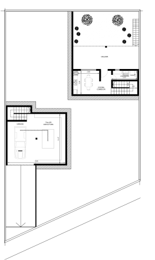
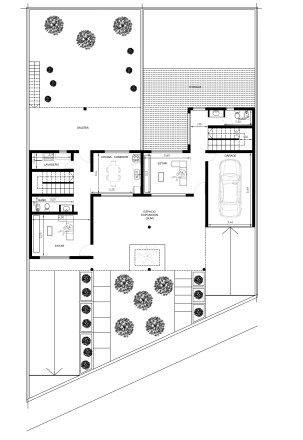
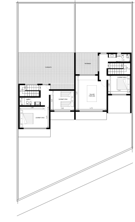
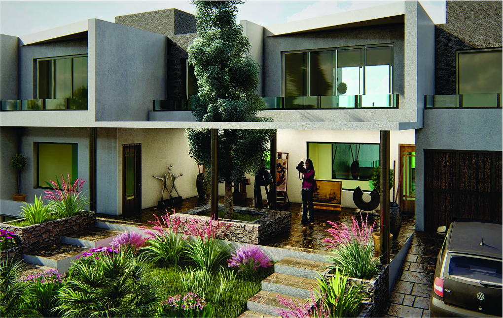

Proyectos
Arquitectura residencial - Casa atelier
Este conjunto propone dos viviendas adosadas diseñadas para un pintor y un escultor, con usos diferenciados y una galería común hacia la calle que funciona como espacio de exposición y vínculo con el entorno. La vivienda del pintor se desarrolla en dos niveles, destacándose una sala taller en el primer piso, abierta, luminosa y con visuales amplias, que favorece el trabajo con la luz natural y el paisaje. La vivienda del escultor incorpora un subsuelo como taller, más introspectivo y contenido, pensado para el trabajo con volumen y materia, mientras la planta superior resuelve el área habitable con apertura hacia un espacio verde. Ambas unidades comparten criterios materiales y formales, pero responden de manera específica a las necesidades espaciales y expresivas de cada disciplina artística.
   Arquitectura urbana - Parque de la memoria ferroviaria
Este proyecto urbano propone la transformación del antiguo predio del ferrocarril en la provincia de La Rioja Argentina en un nuevo espacio público, combinando la preservación patrimonial con usos culturales y recreativos contemporáneos. La intervención incluye la recuperación de edificios en desuso y la incorporación de una plaza cultural, donde se reinstalan elementos históricos como la antigua locomotora y la fuente de agua, resignificándolos como piezas centrales del nuevo paisaje urbano. A modo de transición con el entorno residencial, se proyecta un parque de la memoria ferroviaria, un área verde accesible que articula equipamientos culturales con espacios de esparcimiento. El conjunto busca reactivar un sector históricamente relegado, promoviendo el vínculo entre identidad, memoria y vida urbana.

Arquitectura Sustentable - Polo Deportivo y Ambiental “Cuenca Seca”
Este proyecto plantea la creación del Polo Deportivo y Ambiental “El Sendero”, un parque sustentable que combina infraestructura deportiva con integración paisajística y compromiso ambiental. El conjunto incluye un estadio principal alimentado por energías renovables, como paneles solares y sistemas alternativos, junto con multicanchas, una cancha cubierta, vivienda deportiva y un sector educativo que complementa las actividades físicas con formación y comunidad. El diseño se estructura orgánicamente siguiendo el cauce natural de un río, generando recorridos fluidos, espacios verdes y nodos de encuentro que articulan deporte, naturaleza y educación. La propuesta busca promover un estilo de vida saludable y consciente, integrando arquitectura, medio ambiente y desarrollo social en un entorno activo, inclusivo y de bajo impacto.